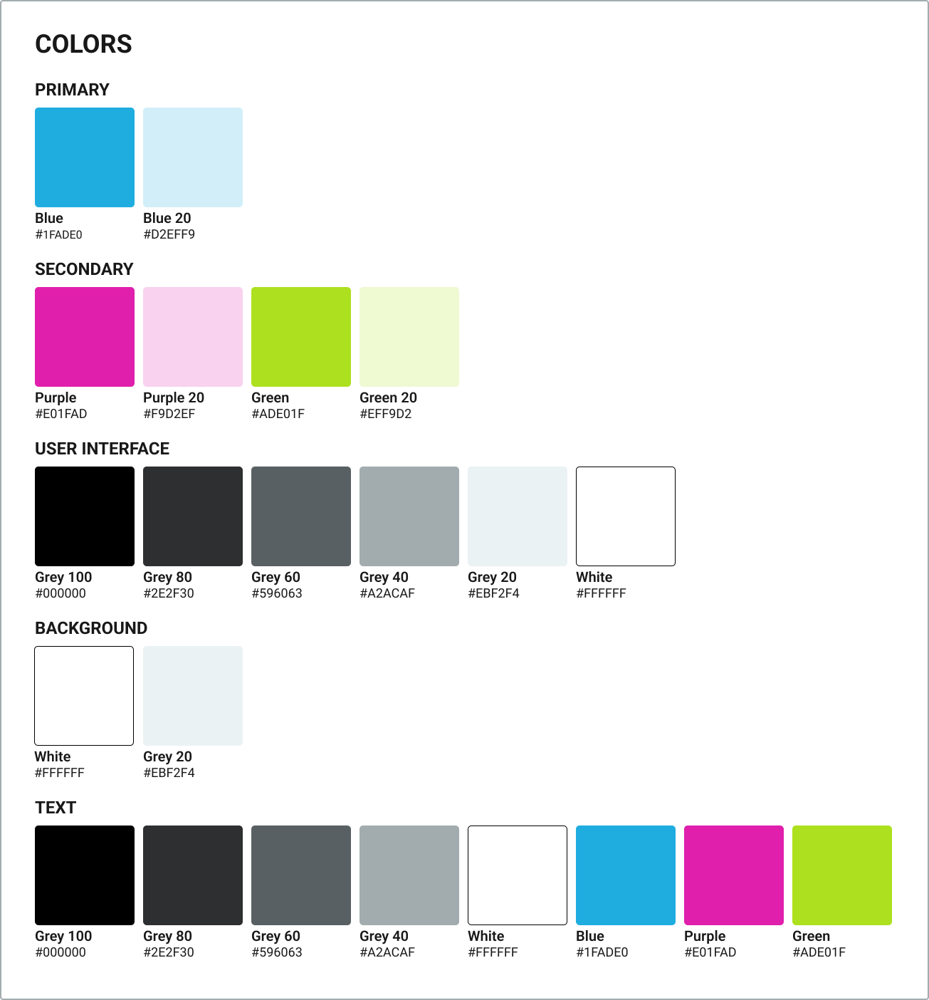

Barvy
Tato část je o barvách. Barvy hrají při návrhu webových stránek nebo aplikací velmi důležitou roli a mohou například výrazně posílit osobnost naší značky.
Barevná schémata
Pokud si jen tak náhodně určíme, které barvy pro naše webové stránky použijeme, tak se k sobě tyto barvy nemusí hodit. Pro výběr barevných kombinací se používají různá barevná schémata. Zde jsem čtyři z nich popsal.
Monochromatic
Toto barevné schéma používá odstíny jedné primární barvy. Jedná se o nejjednodušší barevné schéma.

Analogous
Toto barevné schéma kombinuje barvy, které se na barevném kole nacházejí vedle sebe. S kombinací barev analogous barevného schématu se hodně setkáváme v přírodě.
Complimentary
Toto barevné schéma kombinuje barvy, které se na barevném kole nacházejí naproti sobě.
Triadic
Toto barevné schéma kombinuje jednu primární barvu a dvě barvy, které jsou na barevném kole vedle její protější barvy.
Výběr barev
Pokud od klienta neobdržíme paletu barev, se kterými bychom mohli pracovat, tak si je musíme vybrat sami. Když vybíráme pro webové stránky nebo aplikaci barvy, tak si můžeme položit pár otázek, které nám s jejich výběrem mohou pomoct.
- O čem webové stránky jsou nebo jaký problém webová aplikace řeší?
- Co za uživatele jsou naše cílová skupina?
- Co vybírané barvy znamenají pro mě? Co ve mně vyvolávají za pocity?
- Jaká je kultura uživatelů, kteří budou webové stránky nebo aplikaci používat?
Barvy, které si pro návrh webových stránek vybereme, by měli být škálovatelné a aditivní. Dále bychom měli při jejich používání dbát na to, aby byl například mezi barvou textu a barvou pozadí dostatečný kontrast. K tomuto účelu můžeme v případě potřeby použít třeba tento webový nástroj. Ve všech případech ale nemusí fungovat úplně správně, takže jej vždy neberte úplně vážně. Při výběru šedých a černých barev je také dobré, přidávat jim nepatrný nádech naší primární barvy. Pokud je necháme jen tak, mohou občas působit trochu tvrdě.
Pokud potřebujete s výběrem barev pomoct, tak k tomuto účelu existuje mnoho webových stránek. Můžete se podívat například na coolers.co. Pro ukázku jsem se zde ještě rozhodl přidad obrázek s barvami, které jsem vybral pro návrh webových stránek, na kterých se právě nacházíte.
